Easy Origami Kangaroo Instructions
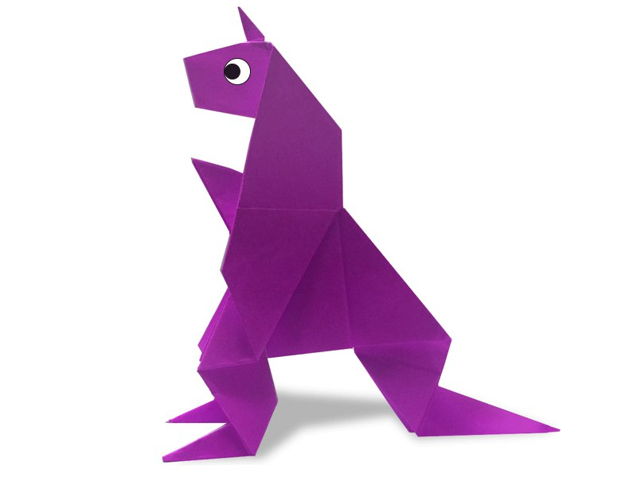
Step 1
: Start with a square piece of origami paper.Fold in half by taking the top corner down to the bottom corner.
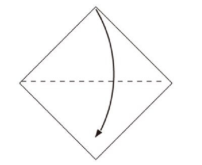
Step 2
: Fold the triangle in half by taking the right corner and folding it to the left.
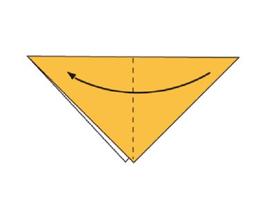
Step 3
: Take the top flap and open it, creasing the left and right sides so you can fold the the top/right corner to the bottom corner.
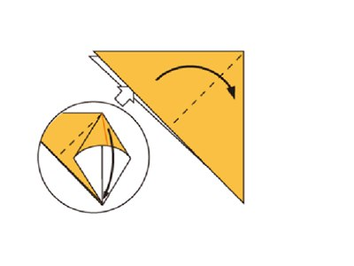
Step 4
: Turn over.
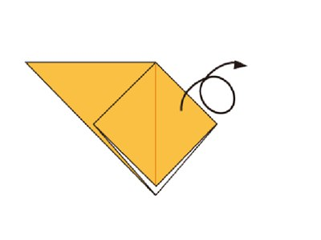
Step 5
: To do that, lift the right flap up so it stands vertically.Grab the left and right side of the flap and open it up. Crease the sides so you can fold the top corner down to the bottom.
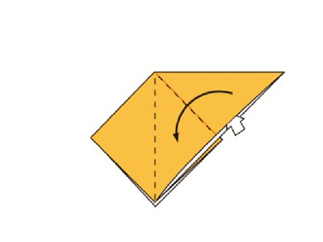
Step 6
: Fold and Unfold the sides and the top along the dotted lines. This step is preparation for the next step.
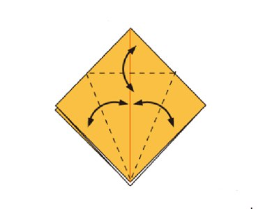
Step 7
: Open the flap upwards.
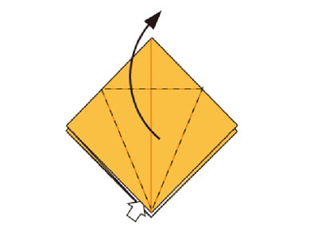
Step 8
: Do the same on the back.
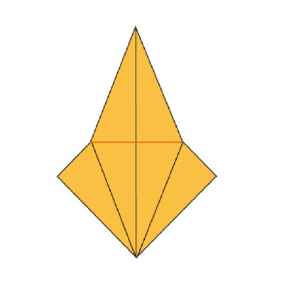
Step 9
: Inside Reverse Fold up both sides of the paper along the dotted line.
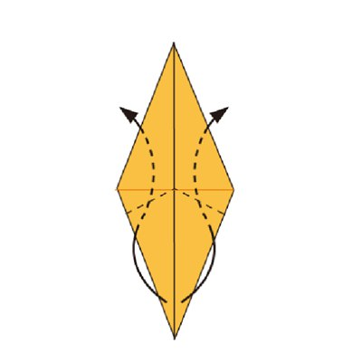
Step 10
: Fold the top flap down and repeat on the other side.
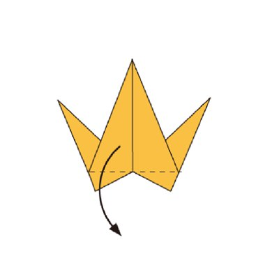
Step 11
: Fold in half.
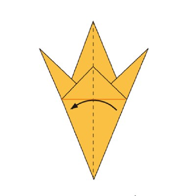
Step 12
: Hold top corner and other hands lower the part of red point,raise the part of blue point.
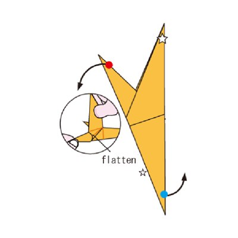
Step 13
: Make an Inside Reverse Fold along the dotted line.Do the same on the back side.
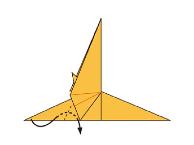
Step 14
: Make an Outside Reverse Fold along the dotted line.Do the same on the back side.
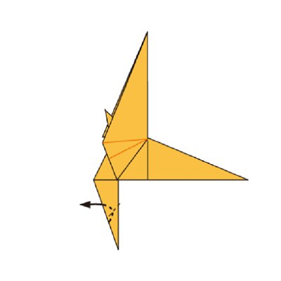
Step 15
: Make an Inside Reverse Fold along the dotted line to form kangaroo’s tail.
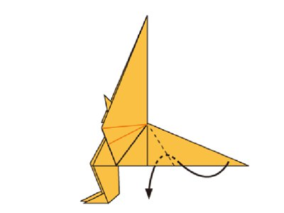
Step 16
: Make an Outside Reverse Fold along the dotted line.
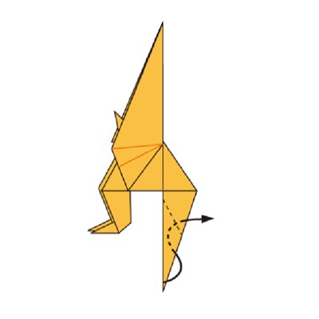
Step 17
: Make an Outside Reverse Fold along the dotted line.
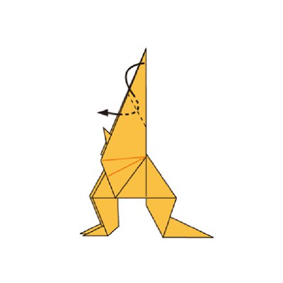
Step 18
: Make an Outside Reverse Fold along the dotted line.
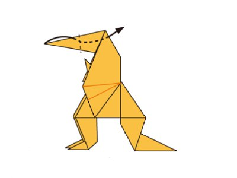
Step 19
: Make an Inside Reverse Fold along the dotted line to form kangaroo’s ear.
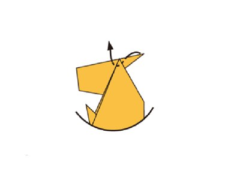
Step 20
: Fold inside along the dotted line.Do the same on the back

Step 21
: Draw eyes and finished .
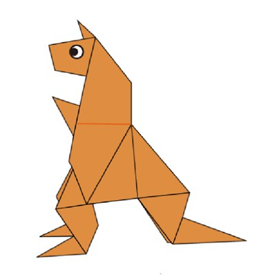
Now you know how to make a paper kangaroo! Easy wasn’t it?Like this project if you like this origami!